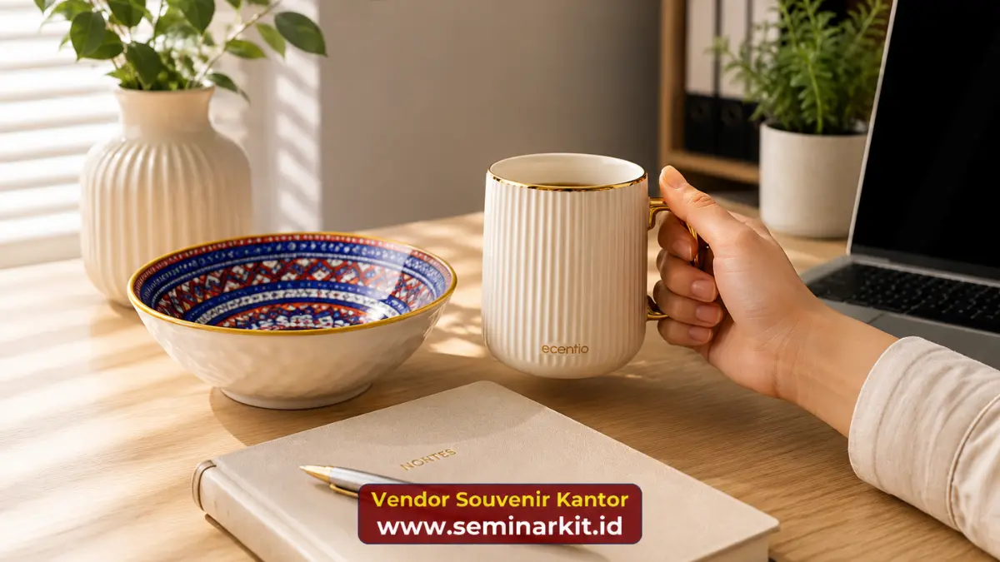

Souvenir perusahaan adalah barang bermerek yang dibagikan perusahaan kepada klien, mitra, atau karyawan sebagai bentuk apresiasi dan sarana branding. Pemilihan yang tepat meningkatkan citra perusahaan dan mempererat hubungan bisnis jangka panjang.
- Souvenir perusahaan berfungsi sebagai alat branding sekaligus bentuk apresiasi.
- Pemilihan jenis souvenir bergantung pada target penerima, anggaran, dan tujuan acara.
- Kualitas dan relevansi souvenir lebih penting daripada sekadar harga murah.
- Pemesanan dalam jumlah besar umumnya memerlukan waktu produksi dan desain khusus.
- Vendor terpercaya membantu memastikan hasil sesuai spesifikasi dan tenggat waktu.
Apa Itu Souvenir Perusahaan?
Souvenir perusahaan adalah barang yang dicetak atau dicantumkan logo perusahaan, digunakan untuk kepentingan promosi, apresiasi, atau kenang-kenangan dalam acara bisnis. Barang ini bisa berupa alat tulis, gantungan kunci, tumbler, hingga produk custom lainnya. Konsep ini dikenal juga dengan istilah corporate gift atau corporate merchandise.
Perusahaan dari berbagai skala, mulai dari startup hingga korporasi besar, umumnya menggunakan souvenir perusahaan dalam berbagai kesempatan seperti seminar, pameran, ulang tahun perusahaan, hingga penghargaan karyawan. Menurut berbagai laporan industri promotional products, barang promosi yang berguna sehari-hari cenderung disimpan penerima dalam jangka waktu lebih lama dibandingkan materi promosi cetak biasa, menjadikannya media branding yang efektif dan berkelanjutan.
Souvenir perusahaan berbeda dengan hadiah pribadi karena tujuannya lebih terarah pada citra merek, bukan sekadar hubungan personal semata. Oleh karena itu, desain, kualitas bahan, dan konsistensi identitas visual menjadi pertimbangan utama saat memilih souvenir jenis ini.
Mengapa Souvenir Perusahaan Penting bagi Bisnis?
Souvenir perusahaan penting karena berfungsi sebagai media branding jangka panjang yang mempertahankan ingatan penerima terhadap perusahaan. Barang ini juga memperkuat kesan profesional saat berinteraksi dengan klien atau mitra bisnis. Beberapa manfaat utama souvenir perusahaan meliputi:
- Meningkatkan brand recall karena logo dan identitas perusahaan terlihat berulang kali.
- Memperkuat hubungan dengan klien melalui bentuk apresiasi yang nyata.
- Meningkatkan loyalitas karyawan saat digunakan sebagai penghargaan internal.
- Menjadi media promosi tidak langsung ketika souvenir digunakan di ruang publik.
Studi dari industri promotional products di Amerika Serikat pada 2023 mencatat bahwa mayoritas konsumen dapat mengingat nama pengiklan pada barang promosi yang mereka terima dalam kurun waktu dua tahun terakhir, menunjukkan efektivitas jangka panjang media ini dibandingkan iklan digital yang cepat terlupakan.
Bagaimana Cara Memilih Souvenir Perusahaan yang Tepat?
Cara memilih souvenir perusahaan yang tepat adalah menyesuaikan jenis barang dengan target penerima, tujuan acara, dan anggaran yang tersedia agar hasilnya relevan dan berkesan. Beberapa faktor yang perlu dipertimbangkan:
- Tujuan pemberian souvenir, apakah untuk klien, karyawan, atau peserta event.
- Anggaran yang dialokasikan per unit maupun total pemesanan.
- Relevansi barang dengan kebutuhan sehari-hari penerima.
- Kualitas bahan agar souvenir tidak cepat rusak atau dibuang.
- Waktu produksi, terutama untuk pemesanan custom dalam jumlah besar.
Souvenir yang terlalu umum atau tidak relevan dengan gaya hidup penerima cenderung kurang efektif sebagai media branding. Sebaliknya, barang yang fungsional dan berkualitas baik lebih berpeluang digunakan dalam jangka panjang.

Apa Saja Jenis Souvenir Perusahaan yang Populer?
Jenis souvenir perusahaan yang populer mencakup alat tulis, tumbler, tas, gantungan kunci, dan perangkat elektronik kecil yang dapat dicetak logo perusahaan. Kategori umum souvenir perusahaan:
- Alat tulis kantor seperti pulpen, notebook, dan sticky notes.
- Peralatan minum seperti tumbler dan botol minum.
- Aksesoris seperti gantungan kunci, pin, dan lanyard.
- Tas dan pouch untuk keperluan kerja maupun perjalanan.
- Perangkat elektronik kecil seperti power bank dan flashdisk.
Pemilihan kategori sebaiknya disesuaikan dengan target audiens. Misalnya, souvenir untuk klien korporat cenderung lebih formal dan berkualitas premium, sedangkan souvenir untuk peserta event umum bisa lebih fungsional dan terjangkau.
Bagaimana Proses Pemesanan Souvenir Perusahaan?
Proses pemesanan souvenir perusahaan umumnya dimulai dari konsultasi kebutuhan, pemilihan desain, produksi sampel, produksi massal, hingga pengiriman ke lokasi tujuan. Tahapan umum yang perlu diketahui:
- Konsultasi kebutuhan dan anggaran dengan vendor.
- Pemilihan jenis barang dan bahan baku.
- Desain logo atau cetakan sesuai identitas perusahaan.
- Persetujuan sampel sebelum produksi massal.
- Proses produksi dan quality control.
- Pengiriman atau distribusi ke lokasi acara.
Waktu produksi bervariasi tergantung jenis barang dan jumlah pesanan. Barang dengan proses custom kompleks umumnya memerlukan waktu produksi lebih lama dibandingkan barang stok yang hanya memerlukan proses cetak logo sederhana.
Apa Saja Kesalahan Umum dalam Memilih Souvenir Perusahaan?
Kesalahan umum dalam memilih souvenir perusahaan meliputi memilih barang tanpa mempertimbangkan relevansi penerima, mengabaikan kualitas demi harga murah, dan memesan mendekati tenggat acara. Kesalahan yang sering terjadi:
- Memilih barang generik yang tidak mencerminkan identitas perusahaan.
- Mengutamakan harga murah tanpa memperhatikan kualitas bahan.
- Tidak melakukan pengecekan sampel sebelum produksi massal.
- Memesan terlalu dekat dengan tanggal acara sehingga waktu produksi terburu-buru.
- Tidak mempertimbangkan kemudahan distribusi souvenir dalam jumlah besar.
Menghindari kesalahan ini membantu memastikan souvenir perusahaan memberikan dampak branding yang maksimal sekaligus efisien dari sisi anggaran dan waktu.
Tips Memaksimalkan Dampak Souvenir Perusahaan
Beberapa tips agar souvenir perusahaan memberikan dampak maksimal:
- Pilih barang yang benar-benar digunakan dalam aktivitas sehari-hari penerima.
- Pastikan desain logo proporsional dan tidak mendominasi tampilan barang secara berlebihan.
- Gunakan kemasan yang rapi untuk meningkatkan kesan profesional.
- Sesuaikan tema souvenir dengan momen atau acara tertentu.
- Lakukan pemesanan lebih awal untuk menghindari keterlambatan produksi.
Souvenir perusahaan merupakan investasi branding yang efektif apabila dipilih dan direncanakan dengan tepat. Pertimbangkan relevansi, kualitas, dan anggaran sejak awal, lalu bekerja sama dengan vendor terpercaya untuk memastikan hasil sesuai kebutuhan.
Untuk panduan lebih rinci, simak juga artikel mengenai cara memilih souvenir perusahaan, ide souvenir perusahaan kreatif, dan biaya serta tips pemesanan souvenir perusahaan dalam jumlah besar.

Banner promosi: klik gambar untuk langsung terhubung ke WhatsApp tim sales.